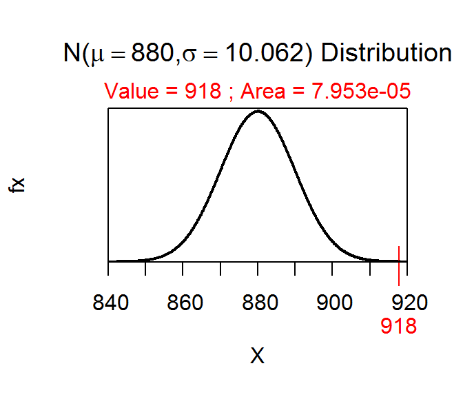

P-Value Calculations and Decisions I
-
The p-value is “the probability of observing a sample mean of 11.2 or ‘different’ if the population mean is 14.” Reject \(H_{0}\) because p-value=0.0196<α (Figure 1).

Figure 1: Normal distribution representing the p-value calculation for the first example.
-
The p-value is “the probability of observing a sample mean of 79.5 or greater if the population mean is 75.” Reject \(H_{0}\) because p-value=0.0040<α (Figure 2).

Figure 2: Normal distribution representing the p-value calculation for the second example.
-
The p-value is “the probability of observing a sample mean of 13700 or less if the population mean is 15000.” Do not reject \(H_{0}\) because p-value=0.1253>α (Figure 3).

Figure 3: Normal distribution representing the p-value calculation for the third example.
R Appendix.
2*distrib(11.2,mean=14,sd=6/sqrt(25))
distrib(79.5,mean=75,sd=12/sqrt(50),lower.tail=FALSE)
distrib(13700,mean=15000,sd=8000/sqrt(50))
Body Temperature
-
\(H_{A}: \mu \neq 37\) vs. \(H_{0}: \mu = 37\)
-
x̄=36.808
-
p-value=0.000000093
-
Reject \(H_{0}\) because p-value < alpha;.
-
Average body temperature is somewhat less (but significantly) less than 37C.
R Appendix.
d <- read.csv("NormTemp.csv")
Summarize(~bodytemp,data=d,digits=3)
2*distrib(36.808,mean=37,sd=0.41/sqrt(130))
Beetle Size
- \(H_{A}: \mu > 190\) vs. \(H_{0}: \mu = 190\), where \(\mu\) is the mean thorax length (\(\mu\)m) for all Halticus oleracea beetles in this population.
- \(\bar{x}\)=194.167 \(\mu\)m. `. p-value=0.103.
- Do not reject \(H_{0}\) because the p-value \(> \alpha\).
- The average thorax length for all Halticus oleracea beetles in this population does not appear to be greater than 190 \(\mu\)m.
R Appendix.
setwd("c:/stats")
d <- read.csv("Beetles.csv")
d <- filterD(d,species=="Halticus.oleracea")
Summarize(~thorax,data=d,digits=3)
distrib(194.167,mean=190,sd=14/sqrt(18),lower.tail=FALSE)
P-Value Calculations and Decisions II
-
The p-value is “the probability of observing a sample mean of 918 or greater if the population mean is 880.” Reject \(H_{0}\) because p-value=0.0001<α (Figure 4).

Figure 4: Normal distribution representing the p-value calculation for the fourth example.
-
The p-value is “the probability of observing a sample mean of 824 or ‘different’ if the population mean is 800.” Do not reject \(H_{0}\) because p-value=0.0455>α (Figure 5).

Figure 5: Normal distribution representing the p-value calculation for the fifth example.
-
The p-value is “the probabiity of observing a sample mean of 73 or less if the population mean is 80.” The null hypothesis is rejected because the p-value (=0.0276)\(<\alpha\).
-
The p-value is “the probabiity of observing a sample mean of 1370 or ‘different’ if the population mean is 1500.” The null hypothesis is not rejected because the p-value (=0.3041)\(>\alpha\).
R Appendix.
distrib(918,mean=880,sd=90/sqrt(80),lower.tail=FALSE)
2*distrib(824,mean=800,sd=60/sqrt(25),lower.tail=FALSE)
distrib(73,mean=80,sd=20/sqrt(30))
2*distrib(1370,mean=1500,sd=800/sqrt(40))